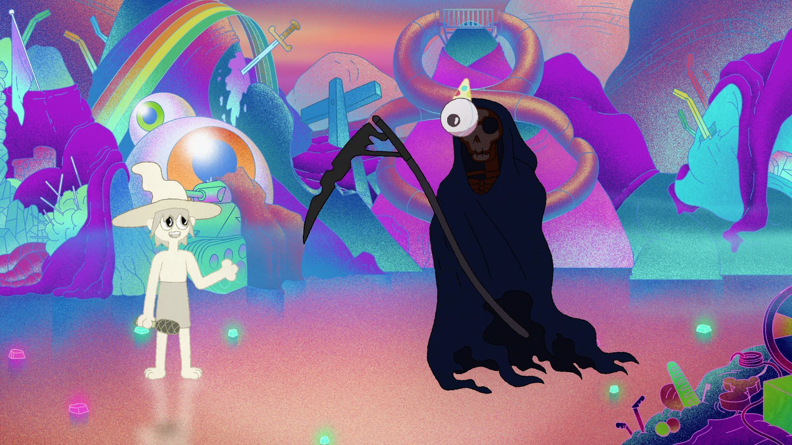
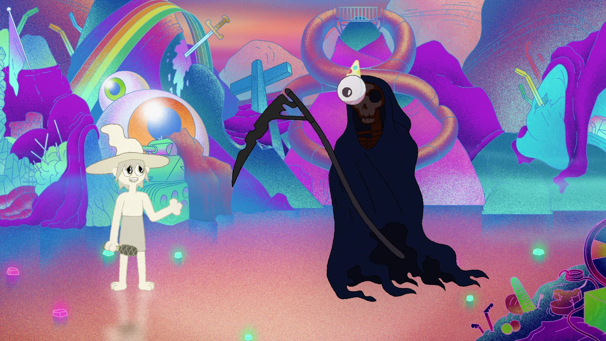

The Midnight Gospel é uma série Netflix que acompanha as aventuras de Clancy, um apresentador de espaçocast que visita mundos surreais em seu simulador de universo e explora questões existenciais sobre a vida, a morte e muito mais.
 
